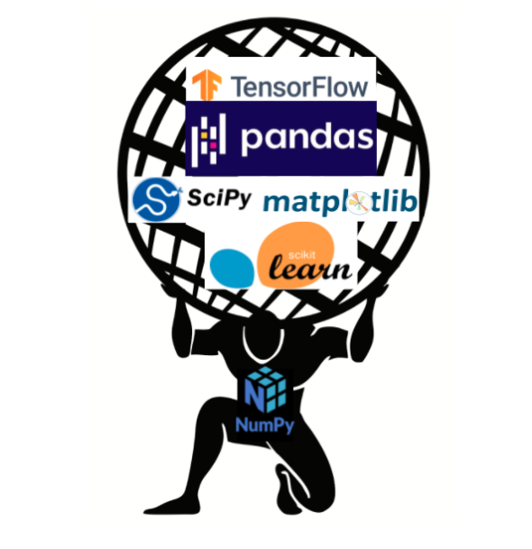

# create a list
my_list = [1, 2, 3, 4, 5]
# iterate with a for loop:
for m in my_list:
print(m)1
2
3
4
5Week 4: Intro to Python - Control Statements, Comprehensions, Nested Lists, and Numpy
Finish Part I of Intro to Python
Control statements (if, for and while loops)
Functions
Intro do Python - Part II
Importing librarys in Python
List Comprehension + Generators
File Management
Numpy
We will go over some concepts that are very general for any programming language.
Using logical operators for comparisons.
Control the behavior of code when iterating using control statements.
Explore iterating through containers using loops
Defining functions to make code more flexible, debuggable, and readable. (Probably for next week)
| Operator | Property |
|---|---|
== |
(value) equivalence |
> |
greater than |
< |
strictly less than |
<= |
less than or equal |
> |
strictly greater than |
>= |
greater than or equal |
!= |
Not Equals |
is |
object identity |
is not |
negated object identity |
in |
membership in |
not in |
negated membership in |
Any programming language needs statements that controls the sequence of execution of a particular piece of code.
Definition: Conditional execution.
if <logical statement>:
~~~~ CODE ~~~~
elif <logical statement>:
~~~~ CODE ~~~~
else:
~~~~ CODE ~~~~Definition: Taking one item at a time from a collection. We start at the beginning of the collection and mover through it until we reach the end.
In python, we can iterate over:
lists
strings
dictionaries items
file connections
grouped pandas df
# create a list
my_list = [1, 2, 3, 4, 5]
# iterate with a for loop:
for m in my_list:
print(m)1
2
3
4
5# while loops
x = 0
while x < 5:
print("This")
x += 1This
This
This
This
Thiswrite code sequentially to solve your immediate needs
reuse this code for similar tasks.
Have very long and repetitive codes
def square(x):
'''
Takes the square of a number
input: int object
outpur: int object
'''
y = x*x
return yThe code block above has the following elements:
def square(x):
'''
Takes the square of a number
input: int object
outpur: int object
'''
y = x*x
return ysquare <- function(x){
# Takes the square of a number
# input: int object
# outpur: int object
y = x*x
return(y)
}In Python, you don’t need to assign an object to a function
The indentation blocks your statement. It replaces the curly braces
Scoping
lambda functions
For the second part of this lecture, we will see:
Importing libraries in Python
Comprehension and Generators
File management in Python
Numpy
Notice, we have lecture notes for each of these topics!
The beauty of open-sourced programming languages is being able to stand on the shoulders of other colleagues. We call those Python libraries (or Packages)
To import a library in Python, you need to explicitly tell python to do it. This works like the library function in R in theory, but not in practice
Python allows you to import:
The full library with the original name
The full library with an alias
Some functions from the library
All methods from the library as independent functions
# import library
import math
# access methods from the library
math.pi3.141592653589793# this will throw you an error
piname 'pi' is not defined# import library
import math as m
# access methods from the library
m.pi3.141592653589793m.factorial(5)120# import some functions
from math import pi
# run
pi3.141592653589793# all methods as independent functions
from math import *
# run
factorial(5)120
a_list =[0, 1, 2, 3, 4, "hey"]
result = []
for e in a_list:
if type(e) == int: # use int for Python 3
result.append(e**2)
result[0, 1, 4, 9, 16]Elegant and cleaner way to perform iterations
Automatically create new objects – no need to a container in the loop
Flexible: allows working with lists, dictionaries, and sets
Faster than loops.
Python has this very nice data type called generators. We use these functions a lot, but hardly talk about them.
Purpose: Generators allow for generating a sequence of values at each time
Main Advantage: do not have to create the entire sequence at once and allocate memory
Lazy Evaluation: Returns a value at time. When requested. It is LAZY!!! We love LAZY!
You can build your own generators. That’s a bit advanced, and you probably will not need to use for our purposes
But we will see some pre-built “generators”:
range(): generate the corresponding sequence of integers. Commonly used with for loops.
zip(): syncs two series of numbers up into tuples.
enumerate(): generates an index and value tuple’s pairing
Most often we will use high-level functions from Pandas to load data into Python objects.
Why are we learning these tools then?
Very pythonic
No direct equivalent in R or Stata
Important when working non-tabular data - text, json, images, etc..
Reading: Check Section 3.3 of Python for Data Analysis to learn more about the topics covered in the notebook.
open(): opens a connection with files on our system.
close(): closes the connection.
write(): writes files on your system. Also line by line.
with(): wrapper for open and close that allows alias.
So far, all our datatypes are geared towards kind of unidimensional data. We can get over with this using a nested list:
# Read in the gapminder data
import csv
with open("../lecture_notes/week-04/gapminder.csv",mode="rt") as file:
data = [row for row in csv.reader(file)]# let's see the data
print(data)[['country', 'lifeExp', 'gdpPercap'], ['Guinea_Bissau', '39.21', '652.157'], ['Bolivia', '52.505', '2961.229'], ['Austria', '73.103', '20411.916'], ['Malawi', '43.352', '575.447'], ['Finland', '72.992', '17473.723'], ['North_Korea', '63.607', '2591.853'], ['Malaysia', '64.28', '5406.038'], ['Hungary', '69.393', '10888.176'], ['Congo', '52.502', '3312.788'], ['Morocco', '57.609', '2447.909'], ['Germany', '73.444', '20556.684'], ['Ecuador', '62.817', '5733.625'], ['Kuwait', '68.922', '65332.91'], ['New_Zealand', '73.989', '17262.623'], ['Mauritania', '52.302', '1356.671'], ['Uganda', '47.619', '810.384'], ['Equatorial Guinea', '42.96', '2469.167'], ['Croatia', '70.056', '9331.712'], ['Indonesia', '54.336', '1741.365'], ['Canada', '74.903', '22410.746'], ['Comoros', '52.382', '1314.38'], ['Montenegro', '70.299', '7208.065'], ['Slovenia', '71.601', '14074.582'], ['Trinidad and Tobago', '66.828', '7866.872'], ['Poland', '70.177', '8416.554'], ['Lesotho', '50.007', '780.553'], ['Italy', '74.014', '16245.209'], ['Tunisia', '60.721', '3477.21'], ['Kenya', '52.681', '1200.416'], ['Gambia', '44.401', '680.133'], ['Bosnia and Herzegovina', '67.708', '3484.779'], ['Libya', '59.304', '12013.579'], ['Greece', '73.733', '13969.037'], ['Ghana', '52.341', '1044.582'], ['Peru', '58.859', '5613.844'], ['Turkey', '59.696', '4469.453'], ['Reunion', '66.644', '4898.398'], ['Sri_Lanka', '66.526', '1854.731'], ['Cambodia', '47.903', '675.368'], ['Bulgaria', '69.744', '6384.055'], ['Lebanon', '65.866', '7269.216'], ['Togo', '51.499', '1153.82'], ['Yemen', '46.78', '1569.275'], ['Jamaica', '68.749', '6197.645'], ['Swaziland', '49.002', '3163.352'], ['Chile', '67.431', '6703.289'], ['Israel', '73.646', '14160.936'], ['Algeria', '59.03', '4426.026'], ['Czech_Republic', '71.511', '13920.011'], ['Djibouti', '46.381', '2697.833'], ['Singapore', '71.22', '17425.382'], ['Nigeria', '43.581', '1488.309'], ['Bangladesh', '49.834', '817.559'], ['DRC', '44.544', '648.343'], ['Cuba', '71.045', '6283.259'], ['Namibia', '53.491', '3675.582'], ['Sudan', '48.401', '1835.01'], ['Syria', '61.346', '3009.288'], ['Rwanda', '41.482', '675.669'], ['Puerto Rico', '72.739', '10863.164'], ['Albania', '68.433', '3255.367'], ['Vietnam', '57.48', '1017.713'], ['Mozambique', '40.38', '542.278'], ['Mali', '43.413', '673.093'], ['Saudi Arabia', '58.679', '20261.744'], ['Liberia', '42.476', '604.814'], ['Madagascar', '47.771', '1335.595'], ['Chad', '46.774', '1165.454'], ['Gabon', '51.221', '11529.865'], ['Mauritius', '64.953', '4768.942'], ['Zambia', '45.996', '1358.199'], ['Romania', '68.291', '7300.17'], ['Dominican Republic', '61.554', '2844.856'], ['Egypt', '56.243', '3074.031'], ['Senegal', '50.626', '1533.122'], ['Oman', '58.443', '12138.562'], ['Zimbabwe', '52.663', '635.858'], ['Botswana', '54.598', '5031.504'], ["Cote d'Ivoire", '48.436', '1912.825'], ['Afghanistan', '37.479', '802.675'], ['Mexico', '65.409', '7724.113'], ['Sao Tome and Principe', '57.896', '1382.782'], ['Myanmar', '53.322', '439.333'], ['Switzerland', '75.565', '27074.334'], ['United Kingdom', '73.923', '19380.473'], ['Japan', '74.827', '17750.87'], ['El Salvador', '59.633', '4431.847'], ['India', '53.166', '1057.296'], ['Thailand', '62.2', '3045.966'], ['Bahrain', '65.606', '18077.664'], ['Australia', '74.663', '19980.596'], ['Mongolia', '55.89', '1692.805'], ['Nepal', '48.986', '782.729'], ['Iran', '58.637', '7376.583'], ['Honduras', '57.921', '2834.413'], ['Guinea', '43.24', '776.067'], ['Venezuela', '66.581', '10088.516'], ['Iceland', '76.511', '20531.422'], ['Somalia', '40.989', '1140.793'], ['Burundi', '44.817', '471.663'], ['Panama', '67.802', '5754.827'], ['Costa Rica', '70.181', '5448.611'], ['Philippines', '60.967', '2174.771'], ['Denmark', '74.37', '21671.825'], ['Benin', '48.78', '1155.395'], ['Eritrea', '45.999', '541.003'], ['Belgium', '73.642', '19900.758'], ['West Bank and Gaza', '60.329', '3759.997'], ['South_Korea', '65.001', '8217.318'], ['Ethiopia', '44.476', '509.115'], ['Guatemala', '56.729', '4015.403'], ['Colombia', '63.898', '4195.343'], ['Cameroon', '48.129', '1774.634'], ['United States', '73.478', '26261.151'], ['Pakistan', '54.882', '1439.271'], ['China', '61.785', '1488.308'], ['Sierra Leone', '36.769', '1072.819'], ['Slovak Republic', '70.696', '10415.531'], ['Tanzania', '47.912', '849.281'], ['Paraguay', '66.809', '3239.607'], ['Argentina', '69.06', '8955.554'], ['Spain', '74.203', '14029.826'], ['Netherlands', '75.648', '21748.852'], ['France', '74.349', '18833.57'], ['Niger', '44.559', '781.077'], ['Central African Republic', '43.867', '958.785'], ['Serbia', '68.551', '9305.049'], ['Iraq', '56.582', '7811.809'], ['Uruguay', '70.782', '7100.133'], ['Angola', '37.883', '3607.101'], ['Sweden', '76.177', '19943.126'], ['Nicaragua', '58.349', '3424.656'], ['South Africa', '53.993', '7247.431'], ['Burkina Faso', '44.694', '843.991'], ['Haiti', '50.165', '1620.739'], ['Norway', '75.843', '26747.307'], ['Taiwan', '70.337', '10224.807'], ['Portugal', '70.42', '11354.092'], ['Jordan', '59.786', '3128.121'], ['Ireland', '73.017', '15758.606'], ['Brazil', '62.239', '5829.317']]This is a weird data structure. Why??


Numpy leans toward less flexibility and more efficiency.
Lists gives you more flexibility and less efficiency.
Allows for easy vectorization of functions
Broadcasting for working with arrays with different dimensions